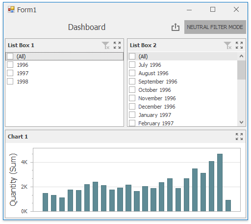
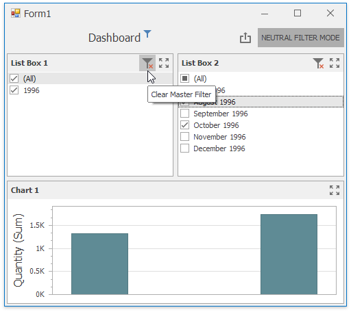

Neutral Filter Mode
The filter elements show all items selected by default, to indicate that no filtering is currently taking place. Starting from this state, users typically begin each filtering operation by deselecting All, before they select individual items.
An extra click is required to begin any actual filtering operation, because the standard filter mode shows all items selected. This is not an optimal implementation for performance reasons, because it generates filtering criteria that are evaluated by the data layer and/or the database.
The dashboard in the image below illustrates how the filter elements are initialized in standard filter mode.

To solve these issues, the Neutral Filter Mode is implemented. It is neutral in the sense that it does not apply any criteria to the data source in its default state, resulting in improved performance.

All items are shown deselected. This means that an extra click is no longer required in the most common scenarios, and this behavior is familiar to end users from websites world-wide.
Built-in UI does not provide a command to switch the filter mode. Reload a dashboard after switching the mode.
The Neutral Filter Mode helps in a situation when there is a potential “dead lock”, due to the fact that multiple filter elements influence each other. The Clear Master Filter button resets the filters.
